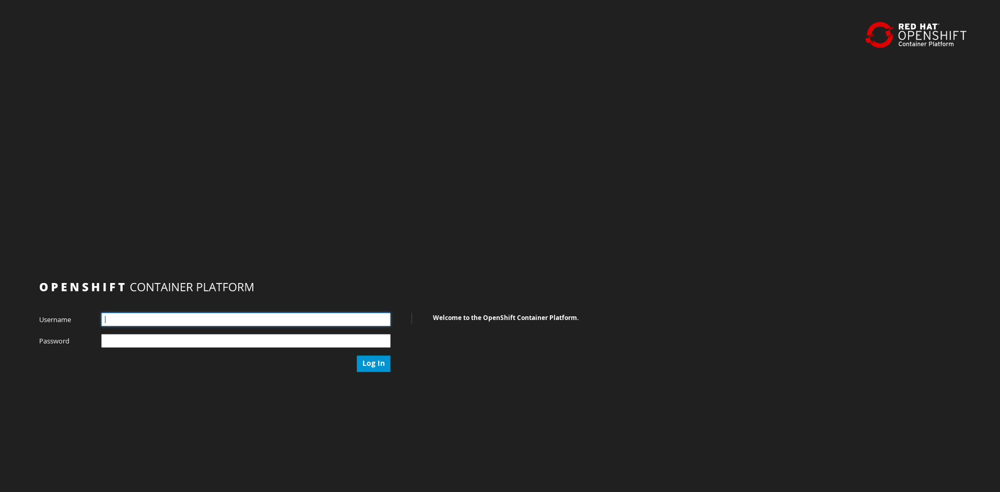
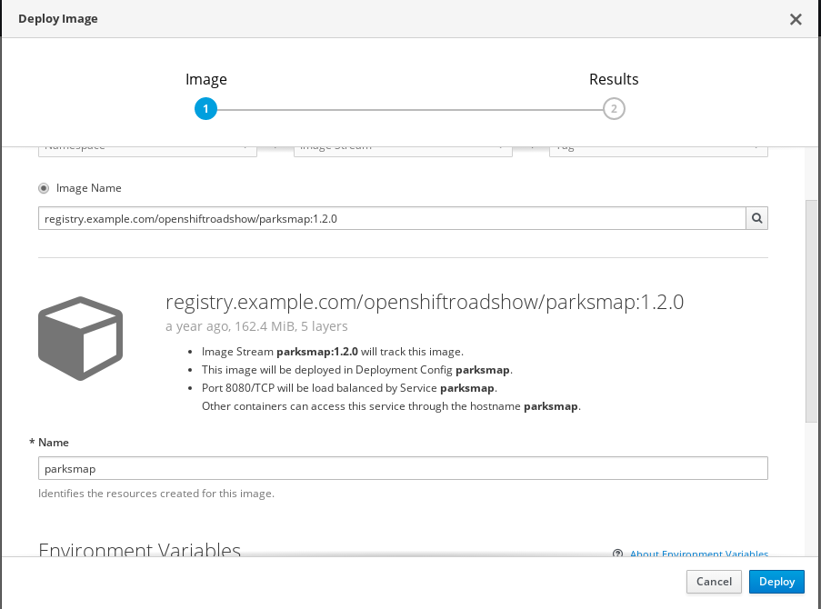
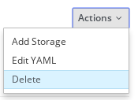
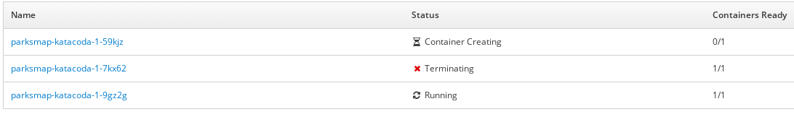
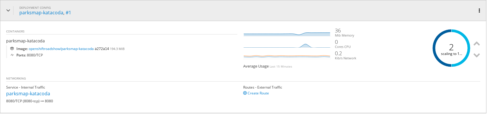
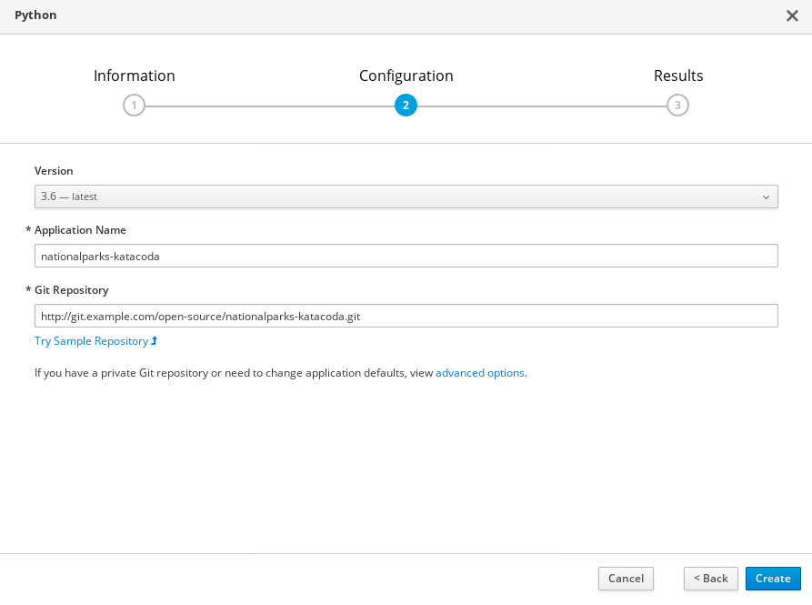
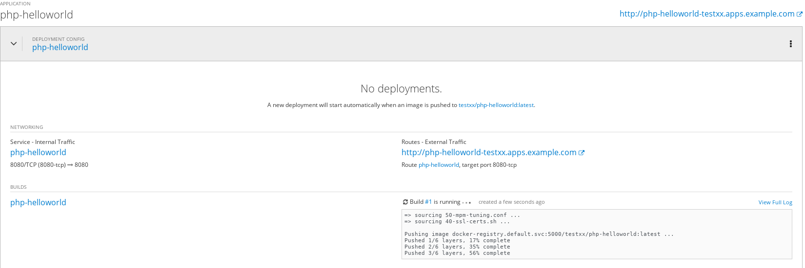

$ oc login https://master.example.com:8443
Authentication required for https://master.example.com:8443 (openshift)
Username: userXX
Password:
Login successful.
You don't have any projects. You can try to create a new project, by running
oc new-project <projectname>快速开始
Table of Contents
命令行
1 - 命令行登录
2 - 登录验证
$ oc whoami
userXXWeb Console
浏览器中输入 https://master.example.com:8443 进入 OpenShift 容器云平台登录页面

在上面登录页面输入
-
Username - userXX
-
Password - redhat
点击 logIn，进入 Web Console 欢迎界面。在页面的右上角你会发现 Create Project 按钮，点击创建 Project

在创建 project 的界面输入：
-
Name -
testXX -
Display Name - 任意名称
-
Description - 任意描绘苏
点击 Create 按钮创建 project。

部署一个 Docker Image
点击 Docker Image 按钮，选择 Image Name，并且输入
registry.example.com/openshiftroadshow/parksmap-katacoda:1.0.0
按 Enter 键，

使用默认配置，点击 Deploy 按钮进行部署。

应用扩展
点击向上按钮扩展 parksmap Pod 的数量为 2，点击 Applications → Pods，可以看到有两个运行的 Pods:

点击进入任意一个 Pod, 在右上角点击 Action 下拉菜单，会看到有 Delete 选项：

点击 Delete 删除 Pod, 返回到 Pod 列表，可以看到有一个新的 Pod 正在创建

选择 Overview, 点击 Pod 旁边向下箭头，将 Pod 数量降低为 1

给 HTTP 请求配置路由
选择 Overview, 点击 Pod，在 NETWORKING 栏点击 Create Route，

点击 Create 按钮创建路由。选择 Applications → Routes 可以查看

点击上面步骤中 URL（http://parksmap-katacoda-test09.apps.example.com/）访问

S2I 构建
在 project 右上角，Add to Project

选择 Languages → Python → Python

在弹出的对话框中点击 Next，在 Configuration 栏编辑:
-
Version - 3.5
-
Application Name - nationalparks-katacoda
-
Git Repository - http://git.example.com/open-source/nationalparks-katacoda.git

点击 Create 完成创建。选择 Overview, 展开 nationalparks-katacoda，查看 S2I 构建的过程：
